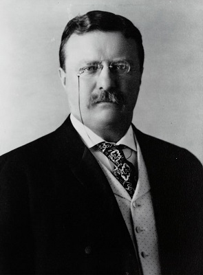

Theodore "Teddy" Roosevelt
Theodore Roosevelt is the ultimate manly boxing cowboy president. Seemingly immune to bullets, it would probably take a perfectly executed triangle choke to wrangle this cowboy. Roosevelt is a bit of a wild card, with less grappling experience than Washington and Taft, but way more boxing experience. He would probably have to bet on a first round knockout.
Table of Contents
Early Life
Theodore Roosevelt was born as the runt of the litter to Teddy Roosevelt Sr. and Martha Stewart Billoch on October 27, 1858. He rejected his poor health and asthma, and implemented a heavy training regiment and took up boxing from an early age. Little did little Teddy know that the manly chest muscles he began developing would aid in stopping a bullet to the chest during an assassination attempt later in his life.
Cowboy Escapades
After the death of his first wife, Roosevelt established Elkhorn Ranch in Dakota. Here he began his training with the cowboys, well known badasses at the time. He learned to rope, ride western style, and hunt, making him the ultimate handyman. In his book "The Lost Frontier", he wrote
"A cowboy will not submit tamely to an insult, and is ever ready to avenge his own wrongs; nor has he an overwrought fear of shedding blood. He possesses, in fact, few of the emasculated, milk-and-water moralities admired by the pseudo-philanthropists; but he does possess, to a very high degree, the stern, manly qualities that are invaluable to a nation."
Rough Riders
Reentering the public eye in 1986 with the power of both a cowboy and a boxer, Roosevelt served as a New York police comissioner until accepting the position of Assistant Secretary of the US Navy in 1897. When war broke out with Spain in 1898 he resigned from the post and formed the first US voluntary cavalry regiment, referred to by the press as the "Rough Riders". The Rough Riders became most famous for charging head first up Kettle Hill, securing a fortified position from the spaniards and earning Roosevelt the Medal of Honor. Upon returning to civilian life, Roosevelt preferred to be referred to as "The Colonel", although "Teddy" remained more popular with the public, costing him some street credentials.
Presidency
In 1899 Roosevelt was named Vice President, and eventually President in 1901 after the current President McKinley was shot. This did, however, not stop Roosevelt from continuing with his boxing, until a sparring match left him blind in one eye in 1902. He then took up judo. He was also known to skinny dip during the winter.
In 1912, Roosevelt was shot in the chest prior to a speech while campaigning in Milwaukee. The bullet passed through the 50 page long speech and lodged 3 inches deep in his chest. Roosevelt refused medical attention, as he was not coughing blood and the bullet had therefore not penetrated his lungs, he proceeded to give the speech. Roosevelt was about 180 cm, weight unknown.